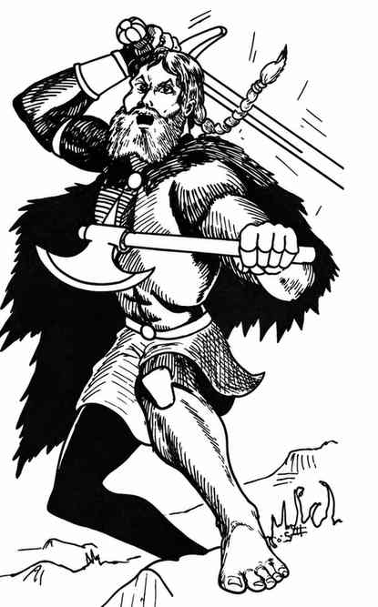
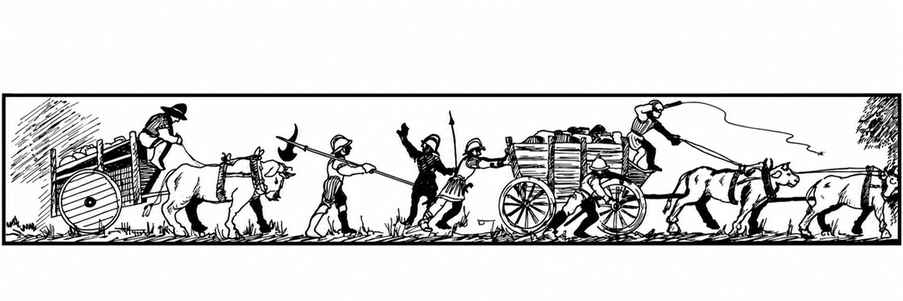

人物 · Men
普通人物每人有 1–6 点生命值。荒野或地城中常会遇到各种人物，他们总是成群出现；一般而言，地城里的队伍较小，户外的队伍较大。以下分别介绍各类人物。
人物队伍中总会有更高等级的角色，具体人数见各类型条目。高等级战士通常骑乘未披甲的中型战马，穿板甲并持盾；牧师通常也如此。战士、魔法师与牧师每达到一个等级，就有 5% 的机会按下表获得相应魔法装备。每一项分别掷骰；若结果为诅咒物品或其他不合用的物品，可重掷一次。若该类别最终没有可用物品，则视为没有该类装备。
| 魔法装备类别 | 战士 | 魔法师 |
|---|---|---|
| 护甲 | 是 | 否 |
| 盾牌 | 是 | 否 |
| 剑 | 是 | 否 |
| 杂项武器 | 是 | 否 |
| 药水 | 是 | 否 |
| 卷轴 | 否 | 是 |
| 戒指 | 否 | 是 |
| 魔杖／法杖／权杖 | 否 | 是 |
| 杂项魔法物品 | 否 | 是 |
若没有杂项武器，或掷得的是刃类武器，则再掷一次，检查是否有魔杖、法杖或权杖；即使掷中，若物品不适用于牧师，仍视为没有此物品。例：检查一名 6 级牧师时，他有 30% 的机会拥有魔法护甲、盾牌、杂项武器或药水；若卷轴项目成功，则牧师持有一卷“防护亡灵”卷轴。高等级领袖通常也有正常机会具备灵能。
强盗 · Bandit（Brigand）
 |
|
强盗出没于温带至亚热带的各种地区，通常成群行动，由高等级战士、魔法师和牧师带领。地城中的强盗数量少得多，也常与盗贼合作。除骰子决定的数量外，每遇到 20 名强盗，另有 1 名 3 级战士；每 30 名另有 1 名 4 级战士；每 40 名另有 1 名 5 级战士；每 50 名另有 1 名 6 级战士。
强盗队伍总由一名 8、9 或 10 级战士率领，另有 6 名 2 级卫兵和一名 7 级副手；这些人均不计入骰子决定的强盗人数。强盗少于 100 人时，首领为 8 级；100–150 人时为 9 级；150 人或更多时为 10 级。每 50 名强盗另有 25% 的机会出现一名 7–10 级魔法师（若出现，掷四面骰决定等级）；例如，200 名强盗必定有一名魔法师。每 50 名强盗另有 15% 的机会出现一名 5 或 6 级牧师，并带一名 3 或 4 级助手（只为牧师掷骰决定等级）。
强盗巢穴有 80% 的机会是临时营地，10% 是带秘密入口的洞穴群，另有 10% 是设有 1–4 架轻型投石机防御的普通城堡。巢穴中有 2–20 名重要俘虏及 5–30 名随营人员／奴隶。
| 强盗的坐骑、护甲与武器 | 比例 |
|---|---|
| 中型战马、链甲、盾牌、剑 | 10% |
| 轻型战马、皮甲、盾牌、矛 | 10% |
| 轻型战马、皮甲、轻型弩 | 10% |
| 皮甲、盾牌、剑 | 40% |
| 皮甲、长柄武器 | 10% |
| 皮甲、轻型弩 | 10% |
| 皮甲、短弓 | 10% |
地形会影响骑乘强盗的比例：丘陵或山地中，骑马者不超过总数的 10%；开阔地带则有 90% 的强盗骑马。其首领获得灵能的机会照常。
劫掠强盗 Brigands。劫掠强盗属于混乱邪恶阵营，其余方面遵循一般强盗的规则。它们有 20% 的机会以洞穴群为巢穴、30% 的机会以城堡为巢穴；只会有 1–10 名重要俘虏，但会有 20–50 名随营人员／奴隶。它们战斗士气高昂，士气反应骰获得 +1。
强盗（或劫掠强盗）示例 Example of Bandits (or Brigands)。遭遇 110 名强盗时，其中 33 名骑马、77 名徒步；额外配置 5 名 3 级战士、3 名 4 级战士、2 名 5 级战士、1 名 6 级战士、1 名 9 级首领、1 名 7 级副手及 6 名 2 级卫兵，共计 130 人。另有 50% 的机会出现魔法师，30% 的机会出现两名牧师。
狂战士 · Berserker
| 项目 | 数据 |
|---|---|
| 出现频率 | 稀有 |
| 出现数量 | 10–100 |
| 护甲等级 | 7 |
| 移动力 | 12 寸 |
| 生命骰 | 每人 2–7 点生命值 |
| 在巢穴概率 | 10% |
| 财宝类型 | 个体财宝 K；巢穴财宝 B |
| 攻击次数 | 1 次（或 2 次） |
| 攻击伤害 | 按武器类型 |
| 特殊攻击 | 领袖类型 |
| 特殊防御 | 领袖类型 |
| 魔法抗性 | 标准 |
| 智力 | 普通至极高 |
| 阵营 | 中立 |
| 体型 | M |
| 灵能能力 | 无 |
狂战士是一群结伴寻求战斗的战士。他们蔑视护甲，陷入战斗狂热时便会投入厮杀；这股狂热使他们每轮攻击两次，或进行一次命中检定获得 +2 加值的攻击。
每遇到 10 名狂战士，另有 1 名 1 级战士；每 20 名另有 1 名 2 级、每 30 名另有 1 名 3 级、每 40 名另有 1 名 4 级、每 50 名另有 1 名 5 级战士。上述角色均不计入骰子决定的数量。狂战士由一名 9 或 10 级战争首领率领，并有两名 6 或 7 级副首领；狂战士不超过 60 人时采用较低等级，超过 60 人则采用较高等级。每遇到 10 名狂战士，另有 50% 的机会出现一名 7 级狂战牧师及其 1–4 名 3 或 4 级助手。狂战士从不检查士气；只要他们认为战斗能带来荣誉（或战利品），就会发起攻击。
海盗 · Buccaneer（Pirate）
| 项目 | 数据 |
|---|---|
| 出现频率 | 不常见 |
| 出现数量 | 50–300 |
| 护甲等级 | 见下文 |
| 移动力 | 12 寸 |
| 生命骰 | 每人 1–6 点生命值 |
| 在巢穴概率 | 80% 或 100% |
| 财宝类型 | 个体财宝 K、W；巢穴中另计 |
| 攻击次数 | 1 次 |
| 攻击伤害 | 按武器类型 |
| 特殊攻击 | 领袖类型 |
| 特殊防御 | 领袖类型 |
| 魔法抗性 | 标准 |
| 智力 | 普通至极高 |
| 阵营 | 中立（或混乱邪恶） |
| 体型 | M |
| 灵能能力 | 领袖类型；攻击／防御模式同领袖 |
海盗出没于海洋、海域、大型湖泊与宽阔河流。护甲取决于所在地；通常在其巢穴——船上——遭遇他们，只有 20% 的机会在海岸或岸边、离船时遇到。每遇到 50 名海盗，除骰子决定的数量外，另有一名 3 级战士；每 100 名另有一名 5 级战士。巢穴中关押着 2–5 名待赎回的俘虏。
海盗总由一名 8 或 10 级船长率领：人数不足 200 时为 8 级，否则为 10 级。船长有一名 6 或 7 级副手及四名 4 级同伴，均不计入普通海盗人数。每 50 名海盗有 15% 的机会出现一名 12–15 级牧师，另有 10% 的机会出现一名 6–8 级魔法师。
| 海盗的护甲与武器 | 比例 |
|---|---|
| 链甲、盾牌、剑、手斧 | 5% |
| 链甲、剑 | 5% |
| 皮甲、盾牌、剑 | 10% |
| 皮甲、矛 | 30% |
| 皮甲、斧 | 20% |
| 皮甲、重型弩 | 10% |
| 皮甲、轻型弩 | 20% |
队伍中的所有领袖与高等级成员都会穿链甲而非板甲；若获得魔法护甲，也一定是链甲。海盗 Pirate。海盗是混乱邪恶阵营的海盗船员，其他方面遵循海盗的一般特征。
洞穴人 · Caveman
| 项目 | 洞穴人 | 部族人 |
|---|---|---|
| 出现频率 | 稀有 | 稀有 |
| 出现数量 | 10–100（或 120） | 10–100（或 120） |
| 护甲等级 | 8（7） | 8（7） |
| 移动力 | 12 寸 | 12 寸 |
| 生命骰 | 2（个体 1） | 2（个体 1） |
| 在巢穴概率 | 40% | 40% |
| 财宝类型 | 见下文 | 见下文 |
| 攻击次数 | 1 次 | 1 次 |
| 攻击伤害 | 按武器类型 | 按武器类型 |
| 特殊攻击 | 无 | 无 |
| 特殊防御 | 无 | 无 |
| 魔法抗性 | 标准 | 标准 |
| 智力 | 低至平均 | 低至平均 |
| 阵营 | 中立 | 中立 |
| 体型 | M | M |
| 灵能能力 | 无 | 无 |
洞穴人 Cavemen。洞穴人是原始而凶悍的人类，居于其他人类尚未定居的地区。每遇到 10 名洞穴人，另有一名 3 级战士；他们总由一名 5 级战士（酋长）率领，并有 1–4 名 4 级副酋长。上述人物均不计入骰子决定的数量。每遇到 10 名洞穴人，另有 10% 的机会出现一名 3 级牧师；他也是洞穴人，但会使用正常的牧师法术。
洞穴人总以洞穴或岩窟为巢穴。女性数量等于遭遇男性人数，幼童数量则为男性人数的一半。每 10 名洞穴人分别有 5% 的机会携有象牙、金块或未切割宝石；若出现其中任何一种，就不会有其他财宝。象牙每根价值 1,000 金币，每根需两人搬运，数量为 2–12 根；金块大小相当于 5 金币，数量为 20–80 块；未切割宝石的基础价值为 10 金币，数量为 1–100 颗。
| 洞穴人的武器 | 比例 |
|---|---|
| 长矛与石斧 | 10% |
| 石斧 | 20% |
| 棍棒 | 50% |
| 长矛 | 20% |
石斧视为战斧，棍棒视为晨星。洞穴人力气过人，造成伤害时额外获得 +1。他们容易被未知事物吓到，因此进行此类士气检定时，反应骰承受 −1 惩罚。
部族人 Tribesmen。原始部族人通常生活在热带丛林或岛屿上，使用大型盾牌。其领袖配置与洞穴人相同，此外每 10 名部族人另有一名 4 级牧师、每 30 名另有一名 6 级牧师，并有一名 8 级首席牧师（巫医）。部族牧师具有德鲁伊性质。
部族人居住在由茅草、竹子或泥土建成的村落中；村落有 50% 的机会以木栅栏防护。女性和幼童的数量各自都等于遭遇男性人数。村中有 75% 的机会拥有 20–50 名奴隶；另有 50% 的机会将 2–12 名俘虏（作为食物）关在围栏里。其财宝与洞穴人完全相同，但部族人可能同时拥有三种财宝。
| 部族人的武器 | 比例 |
|---|---|
| 大型盾牌、长矛与棍棒 | 30% |
| 大型盾牌与两支长矛 | 40% |
| 短弓与棍棒 | 30% |
部族人的棍棒视为钉头锤。
苦行僧 · Dervish
| 项目 | 苦行僧 | 游牧民 |
|---|---|---|
| 出现频率 | 稀有（不常见） | 不常见 |
| 出现数量 | 30–300 | 30–300 |
| 护甲等级 | 见下文 | 见下文 |
| 移动力 | 见下文 | 见下文 |
| 生命骰 | 每人 1–6 点生命值 | 每人 1–6 点生命值 |
| 在巢穴概率 | 5%（15%） | 90% |
| 财宝类型 | 个体财宝 J；巢穴财宝 Z | 见下文 |
| 攻击次数 | 1 次 | 1 次 |
| 攻击伤害 | 按武器类型 | 按武器类型 |
| 特殊攻击 | 领袖类型 | 领袖类型 |
| 特殊防御 | 领袖类型 | 领袖类型 |
| 魔法抗性 | 标准 | 标准 |
| 智力 | 平均至极高 | 平均至极高 |
| 阵营 | 守序善良（中立） | 中立 |
| 体型 | M | M |
| 灵能能力 | 领袖类型 | 领袖类型 |
苦行僧是高度虔诚的游牧民，只在沙漠或草原／平原地区出现。每遇到 30 名苦行僧，另有一名 3 级战士；每 40 名另有一名 4 级战士；每 50 名另有一名 5 级战士；每 60 名另有一名 6 级战士。苦行僧由一名 10、11 或 12 级牧师率领：人数少于 125 时为 10 级，少于 250 时为 11 级，否则为 12 级。领袖另有两名 4、5 或 6 级的助理牧师，以及两名 7 或 8 级的贴身护卫；这些人物均不计入骰子决定的数量。
每遇到 50 名苦行僧，有 15% 的机会出现一名 7 或 8 级魔法师及两名 3 或 4 级助手；若人数超过 200，则魔法师取较高等级。苦行僧巢穴是一座设防堡垒，内有 200–300 名苦行僧；防御设施包括各 1–4 架弩炮与轻型投石机，以及 1–2 架重型投石机。
| 苦行僧的坐骑、护甲与武器 | 比例 |
|---|---|
| 中型战马、链甲、盾牌、骑枪、剑 | 25% |
| 中型战马、链甲、盾牌、复合弓、剑 | 5% |
| 轻型战马、皮甲、盾牌、骑枪、剑 | 50% |
| 轻型战马、皮甲、盾牌、复合弓、剑 | 10% |
| 轻型战马、皮甲、盾牌、轻型弩、钉头锤 | 10% |
由于狂热本性，苦行僧的命中概率与伤害骰均获得 +1。他们在战斗中从不进行士气检定。领袖穿链甲，因此若获得魔法护甲，也一定是链甲。苦行僧领袖拥有正常获得灵能能力的机会。
游牧民 Nomads。游牧民是生活在沙漠或草原／平原、四处放牧和狩猎的部族。由于善于利用地形隐蔽，他们以 1–4 的结果获得突袭。除骰子决定的数量外，他们还会像苦行僧一样拥有高等级战士，并有正常获得灵能能力的机会。
游牧民队伍由一名 8、9 或 10 级战士率领：人数少于 150 时为 8 级，150–249 人时为 9 级，250 人或更多时为 10 级。领袖有一名 6、7 或 8 级副指挥官及 12 名 2 级卫兵，均不计入骰子决定的数量。每遇到 50 名游牧民，有 15% 的机会出现一名 4–7 级牧师，也有同样机会出现一名 5–8 级魔法师；无论上述检定结果如何，每队总会有两名 3 级牧师和一名 4 级魔法师。
游牧民在巢穴时有 90% 的机会是绿洲或溪流旁的帐篷（或蒙古包与马车）营地。女性数量为男性的两倍，幼童数量等于男性数量，并有 10–100 名奴隶、100–400 匹马以及两倍数量的牲畜（羊、山羊、骆驼、牛或牦牛）。10% 的机会巢穴是一座小型有墙城市，另有 20–80 名装备链甲和盾牌、使用长矛与剑（50%）或复合弓与剑（50%）的步兵；其他人员与牲畜数量与部族规模相称。
| 沙漠游牧民的坐骑、护甲与武器 | 比例 |
|---|---|
| 中型战马、链甲、盾牌、骑枪与剑 | 10% |
| 中型战马、链甲、轻型弩与剑 | 10% |
| 轻型战马、皮甲、盾牌、骑枪与剑 | 50% |
| 轻型战马、皮甲、盾牌、剑与两支标枪 | 20% |
| 轻型战马、皮甲、轻型弩与剑 | 10% |
| 草原／平原游牧民的坐骑、护甲与武器 | 比例 |
|---|---|
| 中型战马、链甲、盾牌、骑枪与剑 | 20% |
| 中型战马、链甲、复合弓与剑 | 10% |
| 轻型战马、皮甲、盾牌、骑枪与剑 | 20% |
| 轻型战马、皮甲、复合弓与剑 | 50% |
游牧民通常会在敌人已遭受超过 25% 的伤亡、且看起来仍能继续顽强抵抗时撤退；他们也会假装撤退以诱敌进入伏击。面对较弱队伍时，他们有 75% 的可能将其俘获；面对实力相近的队伍时，有 90% 的可能选择谈判。
商人 · Merchant与朝圣者 Pilgrim
商人 · Merchant
| 项目 | 数据 |
|---|---|
| 出现频率 | 常见 |
| 出现数量 | 50–300 |
| 护甲等级 | 见下文 |
| 移动力 | 见下文 |
| 生命骰 | 每人 1–6 点生命值 |
| 在巢穴概率 | 0% |
| 财宝类型 | 见下文 |
| 攻击次数 | 见下文 |
| 攻击伤害 | 按武器类型 |
| 特殊攻击 | 见下文 |
| 特殊防御 | 见下文 |
| 魔法抗性 | 标准 |
| 智力 | 平均至极高 |
| 阵营 | 中立 |
| 体型 | M |
| 灵能能力 | 见下文 |
商人顾名思义，是经营货物与商品的贸易者。他们乘着驮兽或马车组成商队，从一座城市前往另一座城市做生意，因此几乎无处不在。每支商队中只有 10% 是真正的商人，10% 是赶车／牧兽人，其余 80% 是雇佣护卫。
护卫由一名 6–11 级战士率领，另有一名低一级的副手（5–10 级），两名领袖各有 12 名 2 级卫兵；这些人物均不计入骰子决定的数量。每 50 名商队成员有 10% 的机会出现一名 6–8 级魔法师；每 50 名有 5% 的机会出现一名 5–7 级牧师；每 50 名有 15% 的机会出现一名 8–10 级盗贼及 1–4 名 3–7 级低阶盗贼。
| 商队护卫的坐骑、护甲与武器 | 比例 |
|---|---|
| 重型战马、板甲、盾牌、骑枪与剑（仅 1 级战士） | 10% |
| 中型战马、链甲、盾牌、骑枪与剑 | 20% |
| 中型战马、链甲、盾牌、连枷与钉头锤 | 10% |
| 轻型战马、鳞甲、轻型弩与剑 | 10% |
| 链甲、长柄武器与钉头锤 | 10% |
| 链甲、重型弩与钉头锤 | 10% |
| 环甲、盾牌、长矛与晨星 | 30% |
所有高等级战士与牧师都穿板甲并持盾。商人个人携带 J、K、L、M、N、Q 型财宝；雇佣兵个人携带 K 型，领袖携带 M 型。商队某处会藏有薪资箱，必定包含 2,000–4,000 金币、100–400 铂金币和 4–16 颗基础价值 100 金币的宝石；商品价值为 10,000–60,000 金币，并由驮兽和／或马车运输，每价值 5,000 金币需要 10 头驮兽或 1 辆马车。商人总会骑乘非常迅捷的轻型马。

朝圣者 · Pilgrims
| 项目 | 数据 |
|---|---|
| 出现频率 | 不常见 |
| 出现数量 | 10–100 |
| 护甲等级 | 见下文 |
| 移动力 | 见下文 |
| 生命骰 | 每人 1–13 点生命值 |
| 在巢穴概率 | 0% |
| 财宝类型 | 见下文 |
| 攻击次数 | 见下文 |
| 攻击伤害 | 按武器类型 |
| 特殊攻击 | 见下文 |
| 特殊防御 | 见下文 |
| 魔法抗性 | 标准 |
| 智力 | 平均至极高 |
| 阵营 | 见下文 |
| 体型 | M |
| 灵能能力 | 见下文 |
朝圣者是一群前往某处圣地（或邪地）的人，因此几乎随处可见。每队朝圣者必定另有 1–6 名 2 级牧师、1–4 名 4 级牧师、1–2 名 6 级牧师，以及一名 8 级牧师和一名 3 级、一名 5 级助手。队伍有 25% 的机会拥有一名 5 或 6 级僧侣。每 10 名朝圣者有 10% 的机会出现 1–10 名 1–8 级战士，也有同样机会出现 1–6 名 2–7 级盗贼；每 10 名朝圣者另有 5% 的机会出现一名 6–9 级魔法师。
若朝圣者为守序善良，战士为圣武士；若为混乱善良，战士为巡林客；若为中立，牧师为德鲁伊；若为守序邪恶，所有朝圣者都像狂战士一样作战，但只使用匕首；若为混乱邪恶，盗贼为相应等级的刺客。朝圣者的阵营概率为：守序善良 35%、混乱善良 20%、中立 10%、混乱邪恶 15%、守序邪恶 20%。所有高于平均等级的成员均有正常获得灵能能力的机会。朝圣者有 75% 的机会步行，25% 的机会骑乘；一旦确定，整队都采用同一种方式。
朝圣者与僧侣携带 J 型财宝；战士携带 L、M 型；牧师携带 J、K、M 型；魔法师携带 L、N、Q 型；盗贼携带 J、N、Q 型。每队有 5% 的机会由一名高等级成员携带宗教圣物；圣物会被仔细藏匿，并由陷阱和／或魔法装置严密保护。